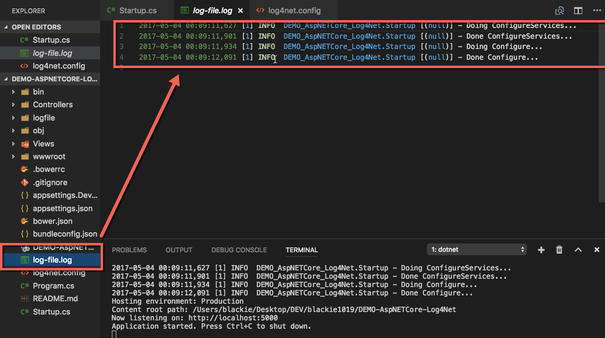
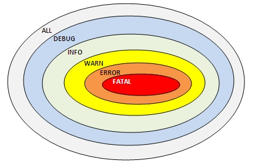
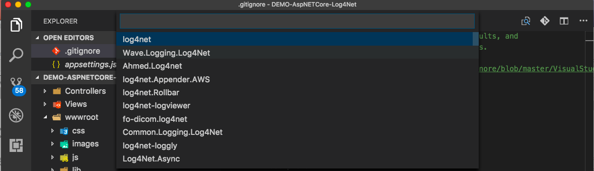

介紹如何在 ASP.NET Core 使用 log4net 幫我們強化 Log 相關功能

ASP.NET Core 本身有提供 Logging 的延伸套件 Microsoft.Extensions.Logging 協助我們透過 (dependency injection (DI)](dependency injection) 的方式在程式中加入 ILoggerFactory 的實體(instance)．如下：
1 | public void Configure(IApplicationBuilder app, |
而今天我們則是要介紹另外一套在 .NET 開發中必備的 Logging 套件 - log4net，來協助我們建立 Logging 機制．
接下來就讓我們先簡單介紹 log4net 是什麼．
log4net Introduction
log4net 是 Apache Logging Services 專案的其中一部分，是由 Apache log4j 移轉制 .NET Runtime 上所開源的日誌紀錄套件，可協助我們快速的開發 Logging 相關功能．
幾乎所有的大型應用都需要有一套強大的日誌系統來診斷和修復功能上的問題，而log4net就是小編這幾年(2012 - 2017) 在 .NET 開發上所採用的Logging 套件，目前運用在全部經手過的各大小專案上，在繁重的應用程式中(每秒接受並處理五萬筆以上的 transaction 請求與每秒10萬筆的 API 請求) 都能有不錯的效能處理與豐富的資料格式與分檔寫入的效果．
The structure of log4net
log4net 有五種主要的組件:
ILog
是我們日誌記錄實體的介面(interface)，這邊我們要透過 LogManager 內的函式與傳入的類型來建立實體．
LogManager
可以幫我們建立 Repository 與 ILog 的實體
Appender
是一個幫我們處理寫入日誌記錄的物件(object)
Filter
是一個幫我們依據設定的條件限制寫入日誌記錄的條件式(condition)
Layout
日誌記錄的呈現風格(display)
Repository
是一個為了儲放 log4net 設定與 LogManager 內實體的集中的儲存槽(store)
執行上的順序為：
{kind=link}
Log Level
我們可以給予不同的 Log Level 來方便我們解讀與觀看，層級如下：

當然 log 不是銀彈，千萬不要因為偷懶就在一開始打了一堆根本不會用到的 log ，因為每個 log 的處理與寫入檔案都是成本，好的 log 帶你上天堂(快速的顯示問題或是我們要找的資料)，壞的 log 讓你住套房(很難找到我們的資料或是導致應用程式效能不佳)
而當我們有了足夠的 log 後，我們就可以考慮採用 ELK 的架構幫我們建立起強大的分析與監控機制，有興趣的可以參考好友的文章：ELK 教學 - 從無到有安裝 ELK (CentOS/Red Hat)．而筆者之後也會分享 ELK 與 ASP.NET Core 這塊的整合與做法．
Hands on Lab
這邊我們可以透過新增一個 ASP.NET Core MVC 專案
mkdir app; dotnet new mvc
專案建立後可以透過先前介紹的nuget套件幫我們加入 log4net 至當前專案：

加入完成後可以看到專案多了一個相依的 framework :

接著使用還原所有相依套件:
dotnet restore
接著我們加入 log4net.config 至專案內
1 | <?xml version="1.0" encoding="utf-8" ?> |
接著我們在程式當中加入下面日誌紀錄：
1 | using System; |
接著啟用網站:
dotnet run
我們即可看到專案下多了一份log-file.log，內容如下：

詳細的config設定可以參考Apache log4net™ Config Examples
Alternative for Logging
除了 ASP.NET Core 自身的 Logging 機制與 本篇介紹的 log4net 外，還有其他可以用在 ASP.NET Core 的 Logging 套件：
這邊會在之後再介紹各相關套件與優劣/適合的使用時機．